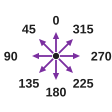
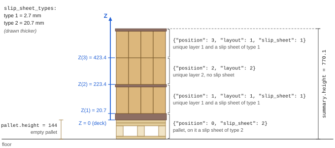
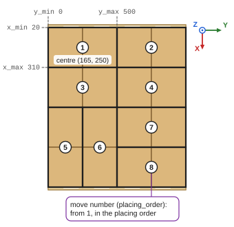

Stack and slip sheets
OpenPallet 1.2The stack (stack) lays the layers from the pallet up, each with a slip sheet or without one. Z counts from the pallet's deck boards, so the robot adds the height of the empty pallet (pallet.height) itself.


Z(K) = (K − 1) × product height + thicknesses of the slip sheets under layer K
summary.height = pallet.height + layers + all slip sheets
Another pallet height changes only pallet.height and summary.height. The Z of the layers stays, as it counts from
the deck boards.

- Slip sheet: a sheet on the pallet, between layers or on top.
- A stack position names a unique layer (
layout=idfromlayouts) and the slip sheet lying on it (slip_sheet=idfromslip_sheet_types). Noslip_sheet: no slip sheet. - A slip sheet type (
slip_sheet_types, up to 10 types) has only a thickness (thickness): how much the slip sheet raises the next layer. The integrator sets its size and material. - A unique layer (
layouts[]): a layer pattern written once. The stack uses it in many layers of the pallet. - A product of a move (
products[]):x,y= the corner with the smaller X and Y,size_x,size_y= its size along X and Y. - The centre of a move for the PLC (
tPlacingData) is in whole numbers: trunc cuts off the fraction.
i16MiddleX = trunc((x_min + x_max) / 2) i16MiddleY = trunc((y_min + y_max) / 2)